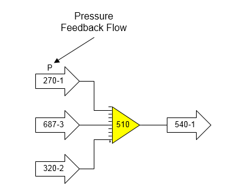
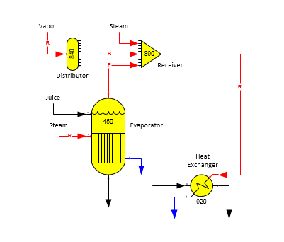

The figure below shows a receiver station with a pressure feedback flow into the receiver from station no. 270. The pressure value given to the flow from station no. 270 will be the minimum pressure of the other two flows into the receiver; that is, the minimum flow stream pressure of the flow from station no. 687, or station no. 320. The output pressure of the flow from receiver station no. 510 going to station no. 540 will be the same as the feedback flow pressure; that is, it will be the minimum of the pressures for the flow streams from station nos. 687 and 320.

Receiver stations can be used to satisfy a required flow into another station when more than one flow is used to satisfy the required flow. For example, vapor flow to a heater is required by the heater and a receiver station is used to combine flash vapor from a flash tank with vapor flow from a distributor that is used to make up the difference between the flash vapor and the required flow into the heater. Or, instead of a distributor, the make up vapor flow is supplied from an external source (i.e., it is an external flow).
The figure below shows a receiver station (no. 890) with its output flow going to the vapor input port of a heat exchanger (station no. 920). The vapor flow into the heat exchanger is required; hence, the output flow from the receiver is required. Vapor from an evaporator (station no. 450) goes to the input of the receiver along with vapor from a distributor and an external steam flow. The vapor from the evaporator is a pressure feedback flow, but it cannot be made a required flow because vapor flows out of evaporator stations cannot be required (see Evaporator Features). Hence, only the flow from the distributor (station no. 840), or the external flow into the receiver can be made required.

Sugars will select one of the input flows into the receiver to be a required flow if the output flow from the receiver is a required flow and the required input flow hasn’t been specified. The quantity of the required flow into the receiver will be equal to the difference between the required flow out of the receiver less the quantity of all other flows into the receiver.
Not all flows can be made required flows. For example, vapor and condensate flows from pans, evaporators and dryers cannot be made required. Hence, when Sugars is determining the input flow into the receiver that is to be required, it will not select any flows that can’t be made required; for example, the vapor flow from the evaporator station no. 450 in the above figure cannot be made required (see figure below for Receiver Properties windows showing the two input flows that can be made required).
The required input flow into a receiver can be changed if there is more than one input flow that can be made required. In the above figure, either the internal flow from distributor station no. 840, or the external flow, can be made required. Double click on the receiver (station no. 890) to open the Receiver Properties window and click on the box of the flow that is to be required. The quantity of flow from the other two flows will be used first to satisfy the required output flow from the receiver, and the selected required input flow will be adjusted by Sugars to satisfy the required output flow quantity. The vapor flow from the evaporator (station no. 450) cannot be made required; however, the pressure fed back to the evaporator from the receiver station will be the minimum pressure of the other two flows. If the quantity of the external flow into the receiver equals zero, its pressure value won’t be considered and the pressure fed back to the evaporator will be the pressure of the flow from the vapor distributor.